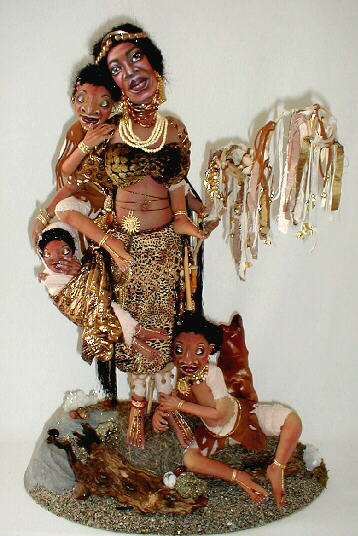

"Ivory Coast Lullaby"(in the "Tableau" Category)  I am thrilled and honored to be able to say that "Ivory Coast Lullaby", my composition set of four cloth dolls, won a first place trophy at Santa Fe Doll Art 2000 in the "Tableau" category. This category is for dolls in groupings or settings, and while the other categories are for specific mediums, the tableau category is open to every medium, making this a very special win for "Ivory Coast". It is also traditionally the category with the largest number of entries. Originally based on a poem that I wrote, this set of four dolls is centered around a main African "mother" figure with a portrait painted flat face. She, and each of her sleeping babies is wire armatured. The grouping is set on a handcrafted base with mesquite and polished semi-precious stones and crystals.
"Cherish" and "Bellarosa" also won awards in different sections of the same competition.
Where the grassland meets the open sea, She stands with dignity and grace. Elder wife of the tribal chief; Woman of an ancient, mystic place.
The secrets and sins of her people she keeps.
Above all this, she's a mother first;
The water caresses the rocky shore,
Gently she whispers the songs of her heart,
-Anne-Marie Brombal © 2000 
|